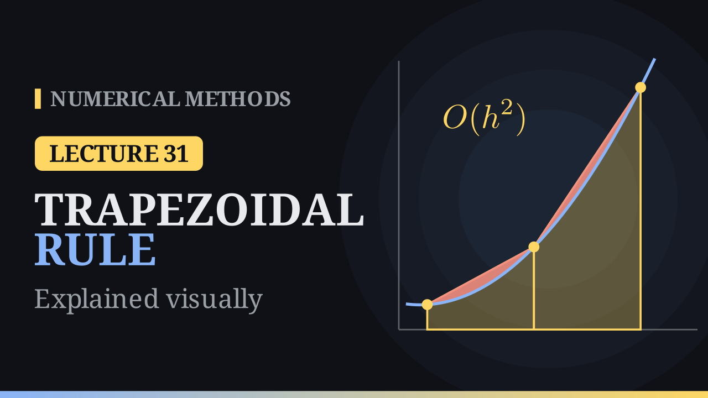

Lecture 31
The Trapezoidal Rule¶

Key results¶
- Trapezoidal rule: \(\int_a^b f(x)\,dx=\frac{h}{2}\big(f(a)+f(b)\big)-\frac{h^3}{12}f''(c)\), with \(h=b-a\). Degree of precision \(1\).
- A convex function (\(f''>0\)) is overestimated, a concave one underestimated: the chord lies above a convex curve. The midpoint rule errs the other way.
- Composite rule: \(T_n=\frac h2\Big(f(x_0)+2\sum_{i=1}^{n-1}f(x_i)+f(x_n)\Big)\), error \(-\frac{(b-a)h^2}{12}f''(\mu)=O(h^2)\): halving \(h\) quarters the error.
- For \(\int_0^1\frac{dx}{1+x^2}=\frac{\pi}{4}\): \(T_1=0.75\) (error \(0.0354\)), \(T_4=0.782794\) (error \(0.0026\)), and \(I-T_n\approx-2\,(I-M_n)\).
The rule¶
Interpolate \(f\) linearly through the end points \(x_0=a\) and \(x_1=b\), and write \(h=x_1-x_0\). The Lagrange basis is
two straight lines whose areas over \([a,b]\) are triangles of base \(h\) and height \(1\). So both weights equal \(\frac h2\):
the area of the trapezoid under the chord: the average height times the width.
The error¶
Integrating the linear-interpolation remainder,
On \([a,b]\) the weight \((x-a)(x-b)\) is never positive, so the Weighted Mean Value Theorem gives a point \(c\in[a,b]\) with
Geometric meaning. If \(f''>0\) (convex) the chord lies above the curve and the error is negative: the rule overestimates. If \(f''<0\) it underestimates. The midpoint rule does the opposite (the tangent lies below a convex curve), so for a convex \(f\), \(M\le I\le T\).
Degree of precision. The rule is exact for \(1\) and \(x\). For \(x^2\) on \([0,1]\) it gives \(\frac12\) instead of \(\frac13\); the error \(-\frac16=-\frac{1}{12}\cdot2\) is exactly the formula with \(f''=2\). The degree of precision is \(1\), the same as the midpoint rule.
Worked example: one trapezoid¶
For \(I=\int_0^1\frac{dx}{1+x^2}=\frac{\pi}{4}\approx0.785398\): \(T_1=\frac12\big(1+\frac12\big)=0.75\), so \(I-T_1=+0.0354\) (an underestimate: the curve is mostly concave). The midpoint rule gives \(M_1=0.8\), \(I-M_1=-0.0146\), on the other side of \(I\).
The composite trapezoidal rule¶
Cut \([a,b]\) into \(n\) pieces of width \(h=\frac{b-a}{n}\), with nodes \(x_i=a+ih\), and put a trapezoid on each piece. Neighbouring trapezoids share an edge, so interior values are counted twice:
Each piece contributes \(-\frac{h^3}{12}f''(\eta_i)\). With \(nh=b-a\) and continuity of \(f''\),
The error is \(O(h^2)\): halving \(h\) divides it by about \(4\), a slope of \(-2\) on a log–log plot.
Worked example: \(n=4\)¶
With \(h=0.25\):
| \(i\) | 0 | 1 | 2 | 3 | 4 |
|---|---|---|---|---|---|
| \(x_i\) | 0 | 0.25 | 0.5 | 0.75 | 1 |
| \(f(x_i)\) | 1 | 0.9412 | 0.8 | 0.64 | 0.5 |
| weight | 1 | 2 | 2 | 2 | 1 |
The weighted sum is \(1+2(0.9412+0.8+0.64)+0.5=6.2624\), so \(T_4=\frac{0.25}{2}\cdot6.2624=0.782794\), with error \(0.0026\).
As \(n\) doubles:
| \(n\) | 1 | 2 | 4 | 8 | 16 |
|---|---|---|---|---|---|
| \(I-T_n\) | 0.0354 | 0.0104 | 0.0026 | \(6.5\times10^{-4}\) | \(1.6\times10^{-4}\) |
| \(I-M_n\) | \(-0.0146\) | \(-0.0052\) | \(-0.0013\) | \(-3.3\times10^{-4}\) | \(-8.1\times10^{-5}\) |
Both rules are of order \(h^2\), and the trapezoidal error is \(-2\) times the midpoint error: on each piece \(-\frac{h^3}{12}f''\) against \(+\frac{h^3}{24}f''\). So the combination \(\frac23M+\frac13T\) cancels the \(h^2\) term; this is the starting point of Simpson's rule.
Choosing \(n\)¶
On \([0,1]\), \(\max|f''|=2\) (at \(x=0\)), so \(|E_T|\le\frac{h^2}{12}\cdot2=\frac{h^2}{6}\). For an error of at most \(10^{-6}\) we need \(h\le0.00245\), i.e. \(n\ge408.2\): \(n=409\). The true error is then \(2.5\times10^{-7}\). The midpoint rule would need \(n=289\).
Weak cases and a surprise¶
- Unbounded \(f''\). For \(\int_0^1\sqrt x\,dx=\frac23\), \(f''\) blows up at \(0\). The rule converges, but doubling \(n\) divides the error by only about \(2.8\) (\(0.0234,\ 0.0085,\ 0.0031,\ 0.0011\) for \(n=4,8,16,32\)).
- Singular end point. For \(\frac{1}{\sqrt x}\) on \([0,1]\) the rule cannot even start, since it needs \(f(0)\).
- Samples only. For \(\int_0^1(1+\cos8\pi x)\,dx=1\), every node of \(T_4\) sits on a peak and \(T_4=2\).
- Periodic functions. For a smooth periodic function over a full period the rule is extremely accurate: for \(\int_0^{2\pi}e^{\cos x}\,dx=7.954927\), the error is \(0.034\) with \(n=4\), \(1.3\times10^{-6}\) with \(n=8\), and at machine precision with \(n=16\).
Halving \(h\). The new nodes are the midpoints of the old pieces, so \(T_{2n}=\frac{T_n+M_n}{2}\). For example \(T_2=\frac{0.75+0.8}{2}=0.775\). No function value is wasted.
Algorithm (composite trapezoidal rule)¶
- \(h=(b-a)/n\).
- \(\text{sum}=\frac{f(a)+f(b)}{2}\).
- For \(i=1,\dots,n-1\): add \(f(a+ih)\) to the sum.
- Return \(h\cdot\text{sum}\).
It uses \(n+1\) function values, and works directly on tabulated data given at equally spaced nodes. Next lecture: Simpson's \(1/3\) rule, which combines the two rules, \(\frac23M_1+\frac13T_1=0.7833\) on our example.